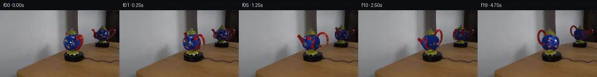

![首帧]()

Round 00
2026-11-05T13:04:21.556661+00:00像素候选变化代码 +314/−0inspection 更新
pixels 5f473cf55e43ff94 · code ba523c44bf3ae052
查看本轮 generate.py 真实 diff
--- previous/generate.py
+++ current/generate.py
@@ -0,0 +1,314 @@
+"""Local source-textured geometry, CPU triangle rasterization, and pixel compositing."""
+from pathlib import Path
+import json, math, time
+import numpy as np
+from PIL import Image, ImageDraw
+import cv2
+from scipy.interpolate import PchipInterpolator
+from scipy.ndimage import gaussian_filter
+import artifact_io
+
+ROOT = Path(__file__).resolve().parent
+SS = 3
+W,H=256,144
+FIRST=np.array(Image.open(ROOT/'first_frame.png').convert('RGB'))
+PARTS=[]
+
+def gridmesh(name, points, normals, material):
+ nv,nu,_=points.shape
+ ids=np.arange(nv*nu).reshape(nv,nu)
+ a=ids[:-1,:-1].ravel(); b=ids[:-1,1:].ravel(); c=ids[1:,:-1].ravel(); d=ids[1:,1:].ravel()
+ faces=np.concatenate([np.stack([a,b,c],1),np.stack([b,d,c],1)])
+ vv,uu=np.meshgrid(np.linspace(0,1,nv),np.linspace(0,1,nu),indexing='ij')
+ PARTS.append(dict(name=name,p=points.reshape(-1,3).astype(np.float32),n=normals.reshape(-1,3).astype(np.float32),uv=np.stack([uu,vv],-1).reshape(-1,2).astype(np.float32),f=faces,material=material))
+
+def lathe(name,zs,rs,material,nv=32,nu=80):
+ fun=PchipInterpolator(zs,rs)
+ z=np.linspace(zs[0],zs[-1],nv)
+ r=fun(z); dr=fun.derivative()(z)
+ a=np.linspace(0,2*np.pi,nu)
+ p=np.stack([r[:,None]*np.cos(a)[None,:]-.025*z[:,None],r[:,None]*np.sin(a)[None,:],np.broadcast_to(z[:,None],(nv,nu))],-1)
+ n=np.stack([np.broadcast_to(np.cos(a)[None,:],(nv,nu)),np.broadcast_to(np.sin(a)[None,:],(nv,nu)),np.broadcast_to(-dr[:,None],(nv,nu))],-1)
+ n/=np.linalg.norm(n,axis=-1,keepdims=True)
+ gridmesh(name,p,n,material)
+
+lathe('body',[8,10,13,18,24,31,36,39],[6.5,11,14.8,18.3,19,18.4,15,10],0,45,100)
+lathe('lid',[39,40,41,43,46,48],[10.8,11.4,11,9.5,6.5,1.6],1,18,72)
+lathe('knob',[48,48.5,50,52,54],[1.4,2.4,2.3,1.7,.1],2,12,40)
+lathe('foot',[0,.7,2.5,5,8],[11.1,11.5,10.8,8.4,6.5],1,13,72)
+
+a=np.linspace(0,2*np.pi,80); b=np.linspace(0,2*np.pi,17)
+# Rigid red loop, ellipse in the vertical plane of the handle.
+center=np.stack([23+11.5*np.cos(a),a*0,31+14.5*np.sin(a)],-1)
+rad=np.stack([np.cos(a)/11.5,a*0,np.sin(a)/14.5],-1); rad/=np.linalg.norm(rad,axis=-1,keepdims=True)
+binorm=np.array([0,1,0])
+n=rad[:,None,:]*np.cos(b)[None,:,None]+binorm[None,None,:]*np.sin(b)[None,:,None]
+p=center[:,None,:]+2.25*n
+gridmesh('handle',p,n,3)
+
+s=np.linspace(0,1,38)
+rf=PchipInterpolator([0,.25,.5,.75,1],[12,16,20,25,30.5]); zf=PchipInterpolator([0,.25,.5,.75,1],[17,21,26,32,37]); tf=PchipInterpolator([0,.25,.5,.75,1],[4.6,4.4,4,3.3,3.1])
+beta=np.deg2rad(-18); r=rf(s); z=zf(s)
+center=np.stack([-r*np.cos(beta),-r*np.sin(beta),z],-1)
+tangent=np.stack([-rf.derivative()(s)*np.cos(beta),-rf.derivative()(s)*np.sin(beta),zf.derivative()(s)],-1); tangent/=np.linalg.norm(tangent,axis=1,keepdims=True)
+binorm=np.array([-np.sin(beta),np.cos(beta),0]); radial=np.cross(tangent,binorm)
+b=np.linspace(0,2*np.pi,21)
+n=radial[:,None,:]*np.cos(b)[None,:,None]+binorm[None,None,:]*np.sin(b)[None,:,None]
+p=center[:,None,:]+tf(s)[:,None,None]*n
+gridmesh('spout',p,n,3)
+# Recessed mouth: a dark disk inside a red rim, visible only from suitable yaw.
+bb=np.linspace(0,2*np.pi,33); rr=np.linspace(0,2.55,5)
+p=center[-1][None,None,:]-.45*tangent[-1]+rr[:,None,None]*(radial[-1][None,None,:]*np.cos(bb)[None,:,None]+binorm[None,None,:]*np.sin(bb)[None,:,None])
+n=np.broadcast_to(tangent[-1],p.shape).copy()
+gridmesh('mouth',p,n,4)
+
+VIEWS=[dict(cx=155.3,base=94.1,scale=1.,slope=.30,phi=52.,mirror=False,tint=1.),dict(cx=219.5,base=70.6,scale=.735,slope=.30,phi=28.,mirror=True,tint=.64)]
+
+def project(p,v,angle=0):
+ phi=np.deg2rad(v['phi']+(angle if v['mirror'] else -angle))
+ c,s=np.cos(phi),np.sin(phi); sign=-1 if v['mirror'] else 1
+ x=p[...,0]*c+sign*p[...,1]*s
+ d=-p[...,0]*s+sign*p[...,1]*c
+ y=v['base']-v['scale']*(p[...,2]+v['slope']*d)
+ q=np.stack([v['cx']+v['scale']*x,y,d+v['slope']*p[...,2]],-1)
+ return q
+
+def light(n,v,angle=0):
+ phi=np.deg2rad(v['phi']+(angle if v['mirror'] else -angle))
+ c,s=np.cos(phi),np.sin(phi); sign=-1 if v['mirror'] else 1
+ nx=n[...,0]*c+sign*n[...,1]*s
+ nd=-n[...,0]*s+sign*n[...,1]*c
+ dot=np.maximum(0,-.35*nx+.55*nd+.68*n[...,2])
+ return .69+.31*dot
+
+def raster(v,angle=0,ss=SS):
+ hh,ww=H*ss,W*ss
+ depth=np.full((hh,ww),-1.e5,np.float32)
+ positions=np.zeros((hh,ww,3),np.float32)
… diff truncated; 227 more lines …